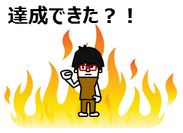

<ons-page ng-controller="resultEntryCtrl as ctrl ">
        
    <ons-toolbar>
        <div class="center">Mission終了</div>
    </ons-toolbar>
    <p> </p>
    
        <ons-row>
        <ons-col style="margin:10px;">
            <ons-button modifier="large" ng-click="ctrl.success();">
            成功した
            </ons-button>
        </ons-col>
        <ons-col style="margin:10px;" >
            <ons-button modifier="large" ng-click="ctrl.failure();">
            失敗した
            </ons-button>
        </ons-col>
    </ons-row>

</ons-page>